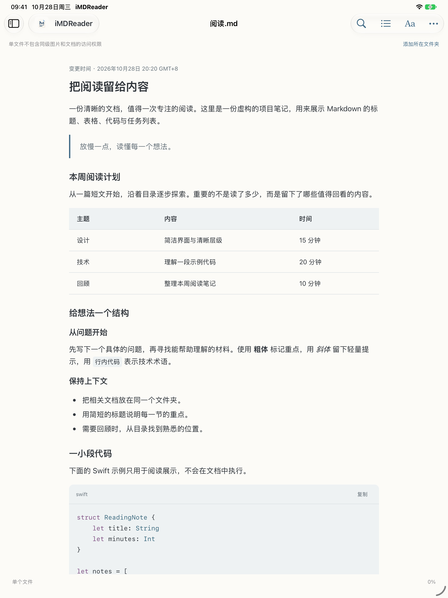

来源有序，随手打开
单篇 Markdown、本地文件夹、GitHub 链接。保留目录层级，置顶常读内容，按自己的节奏浏览。
你的文档，一处安静的阅读空间。
打开一篇文档，就像翻开一本书。从本地文件到 GitHub，让文字、代码与目录回到清晰、舒适的阅读节奏。
Mac 0.2.2 · macOS 14+ · Apple Silicon / Intel
iPhone 与 iPad 版本已提交 App Store 审核，尚未上架。

单篇 Markdown、本地文件夹、GitHub 链接。保留目录层级，置顶常读内容，按自己的节奏浏览。
代码高亮、表格、文章目录与文内查找。调整字号、明暗和配色，让内容更容易阅读。
不编辑、不移动、不删除原文件。移除来源只清理阅读器中的引用；授权与缓存由你管理。
Mac 正式版已发布，提供 DMG 与 ZIP。
iPhone / iPad 商店版尚未发布，不提供预订或下载。